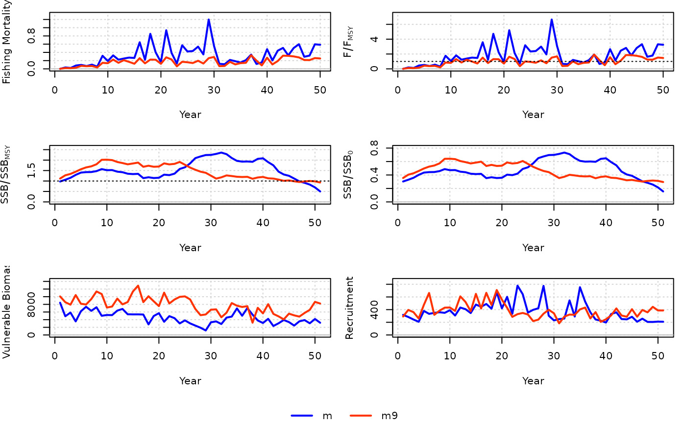

A VPA model that back-calculates abundance-at-age assuming that the catch-at-age is known without error and tuned to an index. The population dynamics equations are primarily drawn from VPA-2BOX (Porch 2018). MSY reference points and per-recruit quantities are then calculated from the VPA output.
Usage
VPA(
x = 1,
Data,
AddInd = "B",
expanded = FALSE,
SR = c("BH", "Ricker"),
vulnerability = c("logistic", "dome", "free"),
start = list(),
fix_h = TRUE,
fix_Fratio = TRUE,
fix_Fterm = FALSE,
LWT = NULL,
shrinkage = list(),
n_itF = 5L,
min_age = "auto",
max_age = "auto",
refpt = list(),
silent = TRUE,
opt_hess = FALSE,
n_restart = ifelse(opt_hess, 0, 1),
control = list(iter.max = 2e+05, eval.max = 4e+05),
...
)Arguments
- x
A position in the Data object (by default, equal to one for assessments).
- Data
An object of class Data
- AddInd
A vector of integers or character strings indicating the indices to be used in the model. Integers assign the index to the corresponding index in Data@AddInd, "B" (or 0) represents total biomass in Data@Ind, "VB" represents vulnerable biomass in Data@VInd, and "SSB" represents spawning stock biomass in Data@SpInd.
- expanded
Whether the catch at age in
Datahas been expanded. IfFALSE, then the catch in weight should be provided inData@Catso that the function can calculate annual expansion factors.- SR
Stock-recruit function (either
"BH"for Beverton-Holt or"Ricker") for calculating MSY reference points.- vulnerability
Whether the terminal year vulnerability is
"logistic"or"dome"(double-normal). If"free", independent F's are calculated in the terminal year (subject to the assumed ratio of F of the plus-group to the previous age class). See details for parameterization.- start
Optional list of starting values. Entries can be expressions that are evaluated in the function. See details.
- fix_h
Logical, whether to fix steepness to value in
Data@steep. This only affects calculation of MSY and unfished reference points.- fix_Fratio
Logical, whether the ratio of F of the plus-group to the previous age class is fixed in the model.
- fix_Fterm
Logical, whether to fix the value of the terminal F.
- LWT
A vector of likelihood weights for each survey.
- shrinkage
A named list of up to length 2 to constrain parameters:
vul- a length two vector that constrains the vulnerability-at-age in the most recent years. The first number is the number of years in which vulnerability will be constrained (as a random walk in log space), the second number is the standard deviation of the random walk. The defaultR- a length two vector that constrains the recruitment estimates in the most recent years. The first number is the number of years in which recruitment will be constrained (as a random walk in log space), the second number is the standard deviation of the random walk.
- n_itF
The number of iterations for solving F in the model (via Newton's method).
- min_age
An integer to specify the smallest age class in the VPA. By default, the youngest age with non-zero CAA in the terminal year is used.
- max_age
An integer to specify the oldest age class in the VPA. By default, the oldest age with non-zero CAA for all years is used.
- refpt
A named list of how many years to average parameters for calculating reference points, yield per recruit, and spawning potential ratio:
vulAn integer for the number of most recent years to average the vulnerability schedule (default is 3).RA length two for the quantile used to calculate recruitment in the year following the terminal year and the number of years from which that quantile is used, i.e.,c(0.5, 5)is the default that calculates median recruitment from the most recent 5 years of the model.
- silent
Logical, passed to
TMB::MakeADFun(), whether TMB will print trace information during optimization. Used for diagnostics for model convergence.- opt_hess
Logical, whether the hessian function will be passed to
stats::nlminb()during optimization (this generally reduces the number of iterations to convergence, but is memory and time intensive and does not guarantee an increase in convergence rate). Ignored ifintegrate = TRUE.- n_restart
The number of restarts (calls to
stats::nlminb()) in the optimization procedure, so long as the model hasn't converged. The optimization continues from the parameters from the previous (re)start.- control
A named list of arguments for optimization to be passed to
stats::nlminb().- ...
Other arguments to be passed.
Value
An object of class Assessment. The F vector is the apical fishing mortality experienced by any age class in a given year.
Details
The VPA is initialized by estimating the terminal F-at-age. Parameter Fterm is the apical terminal F if
a functional form for vulnerability is used in the terminal year, i.e., when vulnerability = "logistic" or "free".
If the terminal F-at-age are otherwise independent parameters,
Fterm is the F for the reference age which is half the maximum age. Once terminal-year abundance is
estimated, the abundance in historical years can be back-calculated. The oldest age group is a plus-group, and requires
an assumption regarding the ratio of F's between the plus-group and the next youngest age class. The F-ratio can
be fixed (default) or estimated.
For start (optional), a named list of starting values of estimates can be provided for:
FtermThe terminal year fishing mortality. This is the apical F whenvulnerability = "logistic"or"free".FratioThe ratio of F in the plus-group to the next youngest age. If not provided, a value of 1 is used.vul_parVulnerability parameters in the terminal year. This will be of length 2 vector for"logistic"or length 4 for"dome", see SCA for further documentation on parameterization. For option"free", this will be a vector of length A-2 where A is the number of age classes in the model. To estimate parameters, vulnerability is initially set to one at half the max age (and subsequently re-calculated relative to the maximum F experienced in that year). Vulnerability in the plus-group is also constrained by the Fratio.
MSY and depletion reference points are calculated by fitting the stock recruit relationship to the recruitment and SSB estimates. Per-recruit quantities are also calculated, which may be used in harvest control rules.
Additional considerations
The VPA tends to be finicky to implement straight out of the box. For example, zeros in plusgroup age in the catch-at-age model will crash the model, as well as if the catch-at-age values are close to zero. The model sets F-at-age to 1e-4 if any catch-at-age value < 1e-4.
It is recommended to do some preliminary fits with the VPA before running simulations en masse. See example below.
Shrinkage, penalty functions that stabilize model estimates of recruitment and selectivity year-over-year near the end of the time series, alters the behavior of the model. This is something to tinker with in your initial model fits, and worth evaluating in closed-loop simulation.
Online Documentation
Model description and equations are available on the openMSE website.
Examples
# \donttest{
OM <- MSEtool::testOM
# Simulate logistic normal age comps with CV = 0.1
# (set CAA_ESS < 1, which is interpreted as a CV)
OM@CAA_ESS <- c(0.1, 0.1)
Hist <- MSEtool::Simulate(OM, silent = TRUE)
# VPA max age is 15 (Hist@Data@MaxAge)
m <- VPA(x = 2, Data = Hist@Data, vulnerability = "dome")
# Use age-9 as the VPA max age instead
m9 <- VPA(x = 2, Data = Hist@Data, vulnerability = "dome", max_age = 9)
compare_models(m, m9)

# }